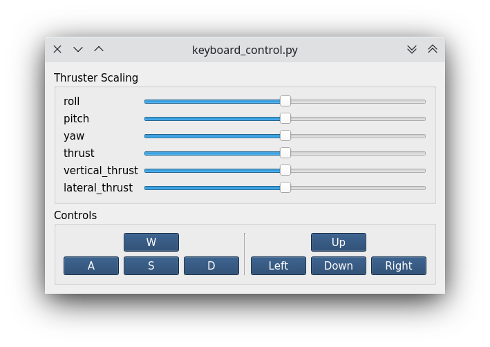

Start The Simulation
Now that we have everything prepared, i.e.:
we can eventually start to work with ROS and the Gazebo simulator.
At the time being, there are 5 launchfiles that come with the fav_sim package.
/home/YOUR_USER_NAME/fav/catkin_ws/src/fav
├── fav_gazebo_plugins
│  ├── include
│  └── src
├── fav_msgs
│  └── msg
└── fav_sim
├── config
├── include
├── launch
│  ├── gazebo_apriltag_tank_world.launch
│  ├── gazebo_empty_world.launch
│  ├── keyboard_control.launch
│  ├── simulation.launch
│  └── spawn_vehicle.launch
├── models
├── nodes
├── res
├── src
└── worlds
- gazebo_empty_world.launch
Launches gazebo with the basic world file in
fav_sim/worlds/base.world.- gazebo_apriltag_tank_world.launch
Equivalent to
gazebo_empty_world.launchbut also includes a tank with an AprilTag pattern on the ground.- spawn_vehicle.launch
Spawns the BlueROV model. The model files are in
fav_sim/models/bluerov. This launch setup requiresgazeboto be already running. Otherwise no vehicle can be spawned.- simulation.launch
Includes
gazebo_apriltag_tank_world.launchandspawn_vehicle.launch. So instead of starting the others separately, it is possible to just launch this launch file.- keyboard_control.launch
Starts a node to control the BlueROV via keyboard input. This launch setup requires
gazeboto be running and an already spawned BlueROV vehicle. Otherwise no vehicle can be controlled.
To test that everything is set up correctly, open two terminals (for example by using the integrated terminal in VS Code and hitting the split terminal button.
In the first terminal, enter:
roslaunch fav_sim gazebo_apriltag_tank_world.launch
This should launch the simulation environment (gazebo).
In a second terminal:
roslaunch fav_sim spawn_vehicle.launch
This will spawn the BlueROV robot model.
Note
In some rare cases, the Gazebo window will stay black. If this is the case, quit by hitting Ctrl + C in the terminal in which you started Gazebo and try again.
Lastly, run in another terminal:
roslaunch fav_sim keyboard_control.launch
This creates a small window for keyboard control.
Make sure you have the keyboard control window in the foreground so the keyboard inputs get captured.
You can use the sliders to scale the thruster output for the different actuation channels to your liking.
Useful keys are W, A, S, D, Left, Right, Up, Down. Use them and find out what they are doing 🥳.
Stop everything by hitting Ctrl + C in all terminals in which you have started launch setups.
Note
The keyboard control window reads your keyboard input. If the window is not the active one, the vehicle will not react to your input!
Hint
For assignment 0, it is not required to read the further sections. But if you like to continue, feel free to do so.